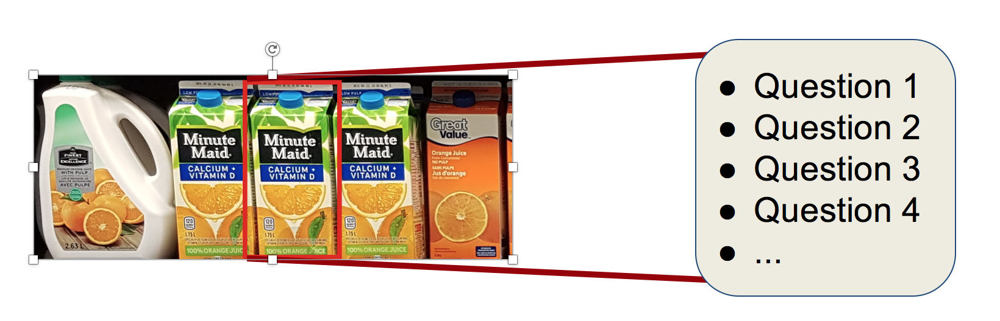

About Me.
I'm currently in the Honours Bachelor of Applied Computer Science programming at Sheridan College specializing in the field of mobile computing. When I'm away from code, you can find me watching, reading, playing, and breathing baseball. I watch more baseball than what is considered healthy, and do some Olympic weightlifting to do something that is actually considered healthy.
Work Experience
I've had the opportunity to work as a programmer/developer at Sheridan College on a project funded by the Natural Sciences and Engineering Research Council (NSERC) and Encore Marketing Management. Under the leadership of Dr. Edward Sykes, our team's goal is to help sales representatives answer questions for products on store shelves to increase their productivity. The use of mobile devices will help them do so:
- Sales rep goes to a store and take a picture of a store shelf with an iPad camera

- Computer vision algorithm recognizes an object of interest
- A bounding box surround an object of interest producing a touch point on the iPad
- Sales rep touches the touch point and answers questions 
Projects
I've taken courses in mobile application development in Android and iOS envionments. Class projects involved me to build quiz applications and tip calculators.
I'm working on a few personal project right now